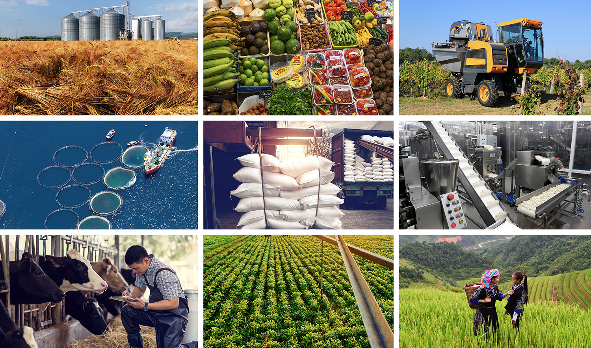

Sustainable agriculture is a way of raising food that is healthy for consumers and animals, does not harm the environment, is humane for workers, respects animals,
provides a fair wage to the farmer, and supports and enhances rural communities.
It is a system of farming that is focused on producing long-term crops and livestock while having minimal effects on the environment.
Sustainable agriculture is a combination of plant and animal practices that are eco-friendly.
It is a way of farming that pays close attention to nature's patterns and maintains the balance of ecosystems.
It is a way of farming that uses techniques to protect the environment, public health, human communities, and animal welfare.
It is a way of farming that is economically viable and socially responsible.
It is a way of farming that is focused on the future.
Sustainable agriculture encompasses practices that prioritize environmental conservation, soil health, efficient water management, biodiversity conservation,
climate resilience, economic viability, social equity, food security, and community resilience.
By promoting diverse cropping systems, minimizing environmental impact, and supporting rural livelihoods, sustainable agriculture ensures the well-being of both people and the planet.
This ensures food supply for poor people by stabilizing crop yields, providing affordable inputs, improving soil fertility, conserving water,
diversifying livelihoods, fostering community resilience, building climate resilience, and reducing food waste.
These benefits are essential for enhancing food security and reducing poverty among vulnerable populations.
The challenges for sustainable food and agriculture are complex and multifaceted. They include the need to increase food production to meet the demands of a growing global population, while also addressing the negative environmental and social impacts of agriculture. These challenges are exacerbated by climate change, which is causing more frequent and severe weather events, such as droughts, floods, and heatwaves, and is threatening the stability of food production systems. In addition, the degradation of natural resources, such as soil, water, and biodiversity, is undermining the long-term sustainability of agriculture. Addressing these challenges requires a holistic approach that integrates environmental, social, and economic considerations, and that promotes the adoption of sustainable practices and technologies by farmers and other stakeholders.
Developing sustainable agriculture involves assessing current practices, setting clear goals, and prioritizing environmental stewardship, economic viability, and social equity.
Key steps include promoting agroecological approaches, supporting diversification, enhancing soil health, optimizing water use, minimizing chemical inputs, investing in research and innovation,
providing training and extension services, facilitating market access, promoting supportive policies, and fostering collaboration and partnerships. By integrating these strategies, sustainable agriculture can address global challenges and ensure food security,
environmental sustainability, and rural development.